Bloggler - Photo Blog/Portfolio
Built With Bootstrap
Created on: Nov. 27, 2014
Latest Update: Nov. 27, 2014
DEMO: http://themeforces.com/demo/html/bloggler
I. Intro
================
Thank you so much for purchasing our Bloggler - Photo Blog/Portfolio Template! This document contains few basic guides in using this template. If you have any questions that are beyond the scope of this document, feel free to message us directly to our help support. Customer satisfaction is our top priority; don’t hesitate to contact us using the contact form on our profile page or themeforces@gmail.com if you require any assistance. Will try to reply within 24 hour.
Thanks so much!
II. Download Files
================

Your purchase download consists 2 Folders (documentation(help), and bloggler-html). Please note that images are for presentation only. Images are not included on the download files. Image placeholder are only used in the final download.
Opening the 'bloggler-html folder' will give you 6 html files (index.html, about-me.html, blog.hmtl, blog2.hmtl, contact.hmtl, and works.html); and 6 other folders.
All the single blog posts are found on the 'blog' folder. All media and images are found on the 'img' folder, all the css on the 'css' folder as well as the js to the 'js' folder.
We also used Font Awesome 300+ Free Icons - Read More About Font Awesome and How to Use it Here. Below are few examples of the icons.
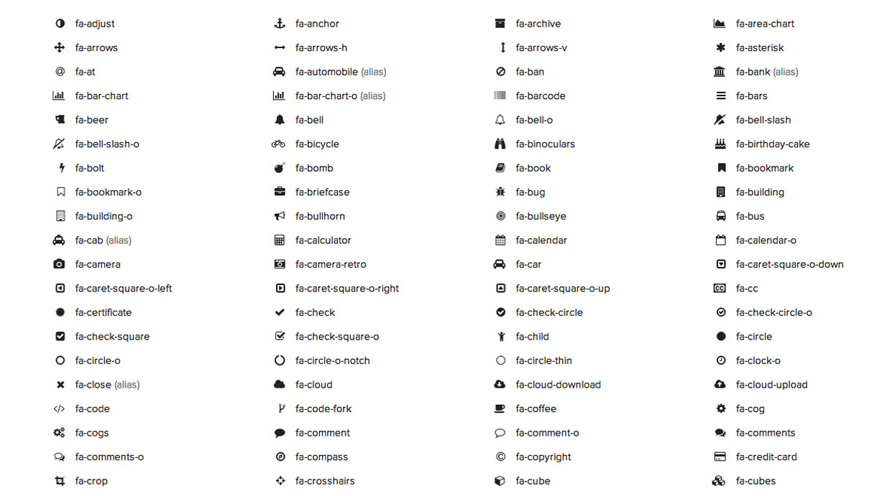Note: Make sure all the files are there. Contact support if there are any missing files from your download.
III. HTML Files
================
Bloggler is based in Bootstrap 3.3.1 framework using 1170px with 2 columns and nested 12 columns. If you are unfamiliar with Bootstrap grid system then you can read it here.
The main structure of the template is divided into sections, each with it’s own identifier or ID (like #fullscreen #works, #blog etc.). It is then wrapped in a div “container” or "container-fluid" followed by div “row” then your content that can be wrapped in 12 columns. Overall you can learn more about the structure I used based on Bootstrap Here .
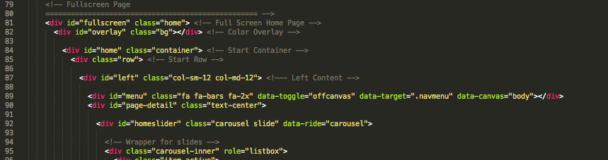The HTML codes are well commented so you could easy understand the structure. Just read the hide comment before or after the lines when placing your content.
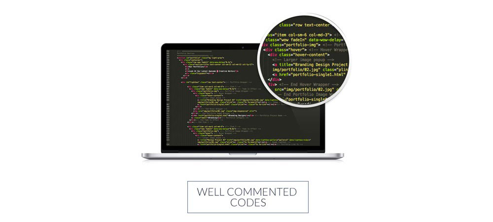IV. CSS Files
================
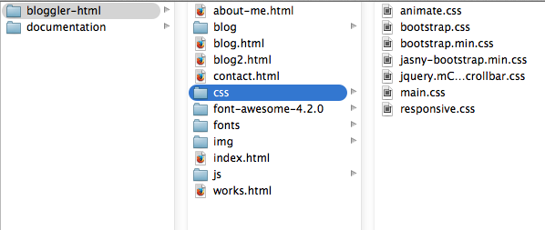
Css Folder consists of 7 .css files. Animate.css is use for animations. Jasny-bootstrap.min.css is use for the menu Off-Canvas toggle.
Sometimes, you need to adjust the responsive output to make it perfect or well fitted to any mobile device. Responsive.css is a custom css style that includes all mobile viewport queries, making Sailor Template a beautifully responsive template viewable to other mobile devices. I don’t recommend editing this file, so you can make a child theme or if you are expert then you’re free to do any tweaking.
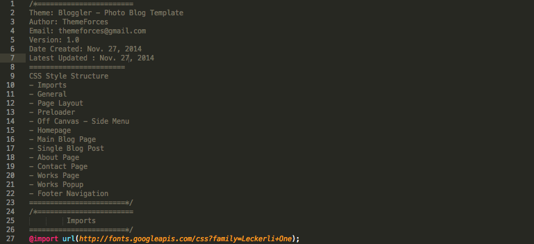I used 'main.css' as the main css stylesheet of the template. You can easily edit it to change the style of your theme such as font style, colors, and more. If you would like to edit a specific section of the site, simply find the appropriate label (classes´ names or id´s names) in the 'main.css' file, and then scroll down until you find the appropriate style that needs to be edited.
I declared all the css files on the head section of my index.html.
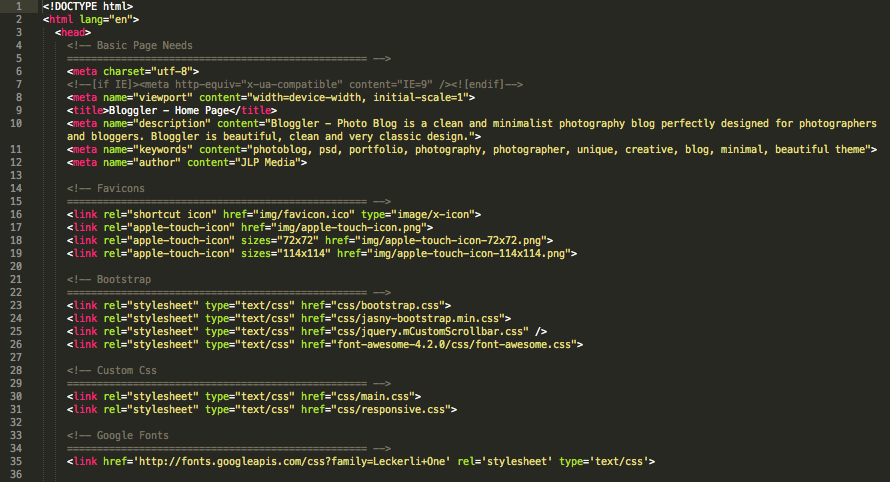V. Javascript Files
================
In the js folder you will find all the .js files I used for the theme.
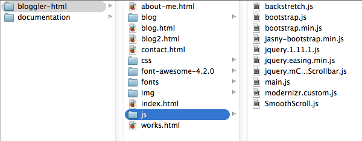The 'main.js' contains the entire javascript snippets I used for the template to function properly. I place comment for each snippet for you to easily determine each uses.
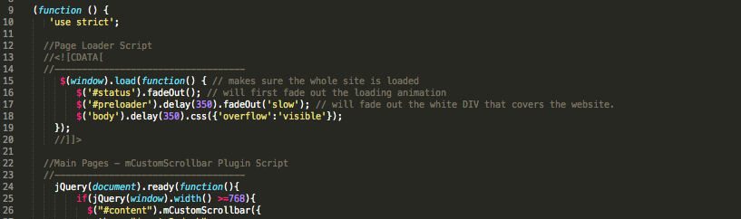You can find more js files at js folder (such as bootstrap.js, SmoothScroll.js, jasny-bootstrap.min.js, jquery.mCustomScrollbar.js, and backstretch.js etc), however these don’t need any editing. Regular updates of the following may be needed. But, please leave that to us to make sure there are no conflicting codes.
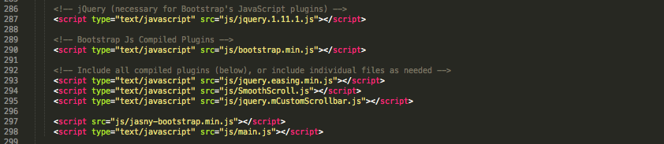I declared all the js files after the footer section of my .html files.
VI. Template Customization
================
A. Homepage
How to Change Image Slideshow BG
To replace image BG, go to 'index.html', replace the image location on the backstretch.js script shown on the bottom of the js part of the index (check attached image below):
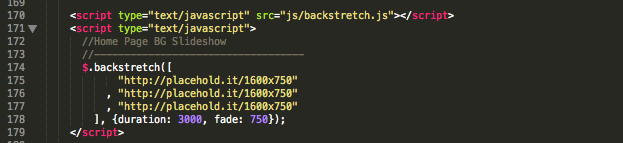Replace http://placehold.it/1600x750 with your own image location. You can add as many images on the slideshow.
How to Set Sidebar Img BG
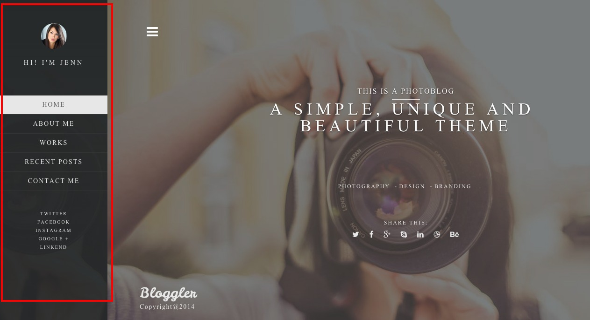To Change the Sidebar Image BG, replace the placeholder image in the 'img' folder. Make sure to have your image saved with the same name as 'sidebar-img.jpg'. Also make sure that you saved it on the same folder.
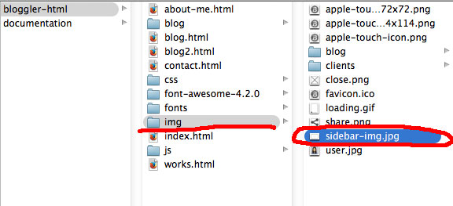VII. Classes Used
================
Bloggler Photography Portfolio Template is 100% based on bootstrap, so basically all classes used are based with it too (boostrap.css). We use the main.css to override the bootstrap.css. When you do a custom style, do not edit using the bootstrap.css. Use the main.css stylesheet for any changes of styles you want to add.
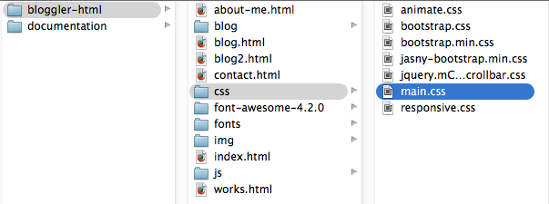VIII. Plugin Used
================
As most templates, we also use few plugins to make Sailor theme properly functioning.
1. Jasny-Bootstrap Plugin - This is use for the offcanvas menu - Read more.
2. Backstretch Plugin - This is use for the Fullscreen image BG in the Homepage - Read more.
3. Jquery.mCustomScrollbar.js Plugin - This is use for the Custom Scrollbar use for Every Page. - Read more.
IX. Sources and Credits
================
* Background Images used in the Demo from unsplash.com and picjumbo.com
* Jquery.mCustomScrollbar.js Plugin
X. Changelogs
================
Version 1.1
Released Date: December 9, 2014
1. Working Contact Form
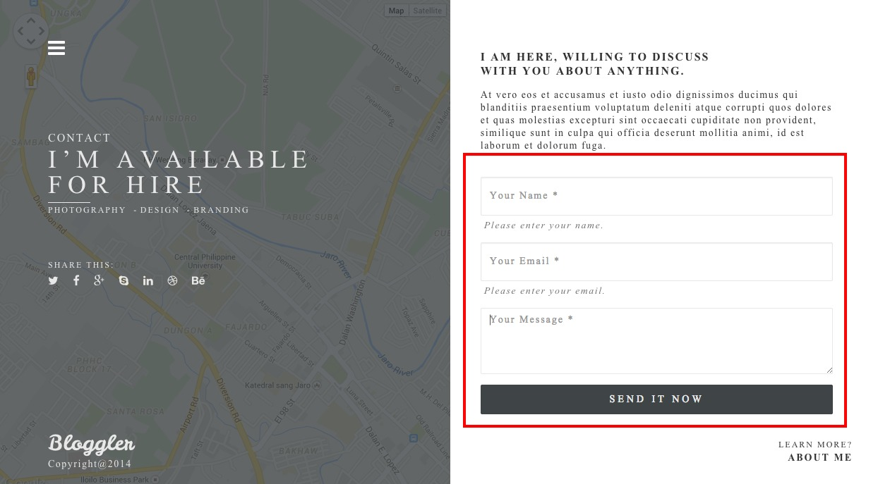To make the contact form function very well, we have added three files on the 'js folder' the contact.js, jqBootstrapValidation.js and submit.php.
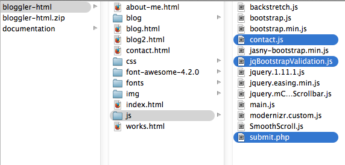To setup your contact form properly, you need to edit your contact.js and submit.php. Take note that this contact won't work on local server.
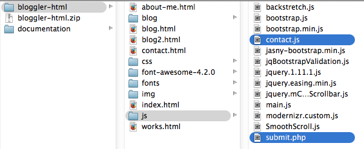Contact.js is use for the validation function. Make sure you have point our submit.php exact url/location to make the form properly working like the image below.
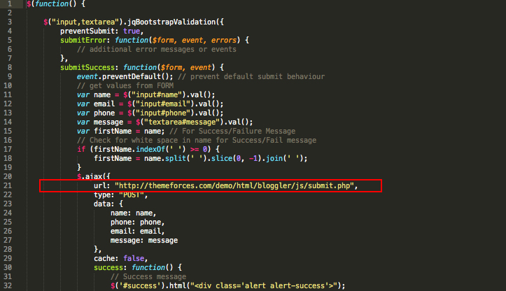To configure your email recipient, email subject etc... open the submit.php.
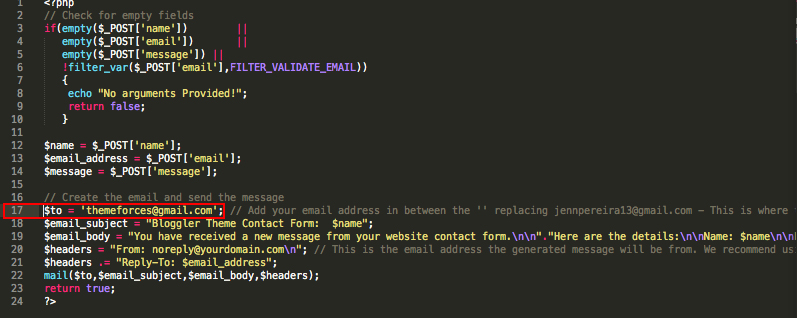Simply replace the current email with your own personal email. You can also edit the message subject ($email_subject).
2. Few CSS Added
We have added few Styling for the contact form.
Here are few styling added to the main.css
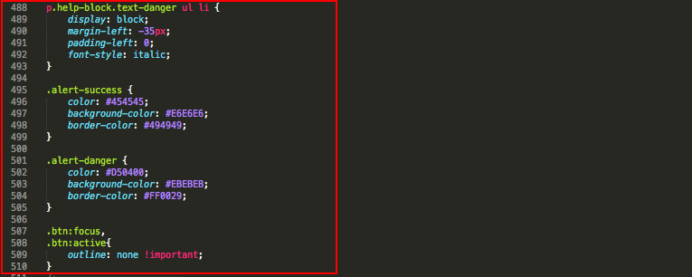Here are few styling added to the responsive.css

3. Minor HTML Changes on the contact.html
Since we have changed the contact form, we have also added few changes to the contact page html structure. Here's the changes we've done for the contact.html.
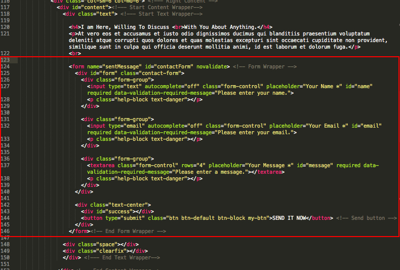4. Stop Video When Close Modal Javascript Added
We have added a simple javascript to stop the video from playing when the modal is closed.
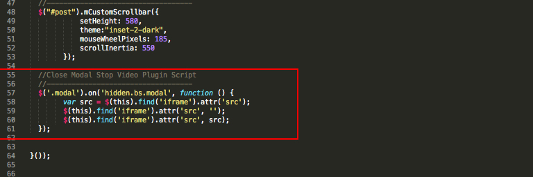Once again, thank you so much for purchasing our Bloggler Template. If you can’t find any solution for your question here, feel free to contact us at your email - themeforces@gmail.com
Thanks so much!